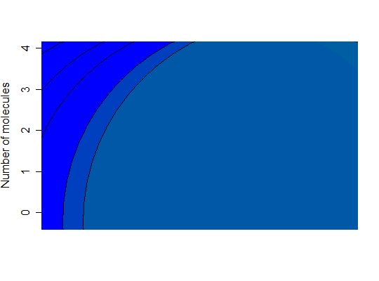
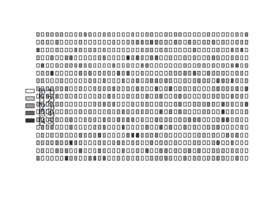

create_dpcr(data, n, exper = "Experiment 1", replicate = NULL, assay = "Unknown", type, threshold = NULL, breaks = NULL, adpcr, col_names = NULL, row_names = NULL, panel_id = NULL)
numeric vector or matrix of data from dPCR
experiments. Data frames will be converted to matrices.integer equal to number of partitions."character" defining type of data. Could
be "nm" (number of molecules per partition), "tnp" (total
number of positive wells in the panel), "fluo" (fluorescence), "np"
(status (positive (1) or negative(0)) of each droplet) or"ct"
(threshold cycle).numeric value giving the threshold above which
droplet is counted as positive. Ignored if adpcr is TRUE.numeric vector giving the number of intervals into
which data should be cut. Ignored if adpcr is FALSE.logical. If TRUE, function creates
adpcr object. If FALSE, function creates
ddpcr object.character vector of column names in array. Ignored if not
adcpr.character vector of row names in array. Ignored if not
adcpr.factor vector of panel IDs (or names). Ignored if not
adcpr.adpcr or ddpcr object.
Creates adpcr and ddpcr
objects from data.
This constructor function assists in creation of objects used by other functions of the package. It is also responsible for checking the correctness of arguments.
A warning is prompted whenever any of arguments is converted to other type.
create_dpcr is a preferred to calling directly
new.
Currently only end-point measurements are supported.
# Droplet digital PCR example sample_runs <- matrix(rpois(60, lambda = 1.5), ncol = 2) ddpcr1 <- create_dpcr(sample_runs[,1], n = 30L, threshold = 1, type = "nm", adpcr = FALSE) ddpcr2 <- create_dpcr(sample_runs[,2], n = 30L, threshold = 1, type = "nm", adpcr = FALSE) plot_vic_fam(ddpcr1, ddpcr2)
# Array digital PCR example sample_adpcr <- create_dpcr(rpois(765, lambda = 0.8), n = 765L, type = "nm", adpcr = TRUE) plot_panel(sample_adpcr, 45, 17)